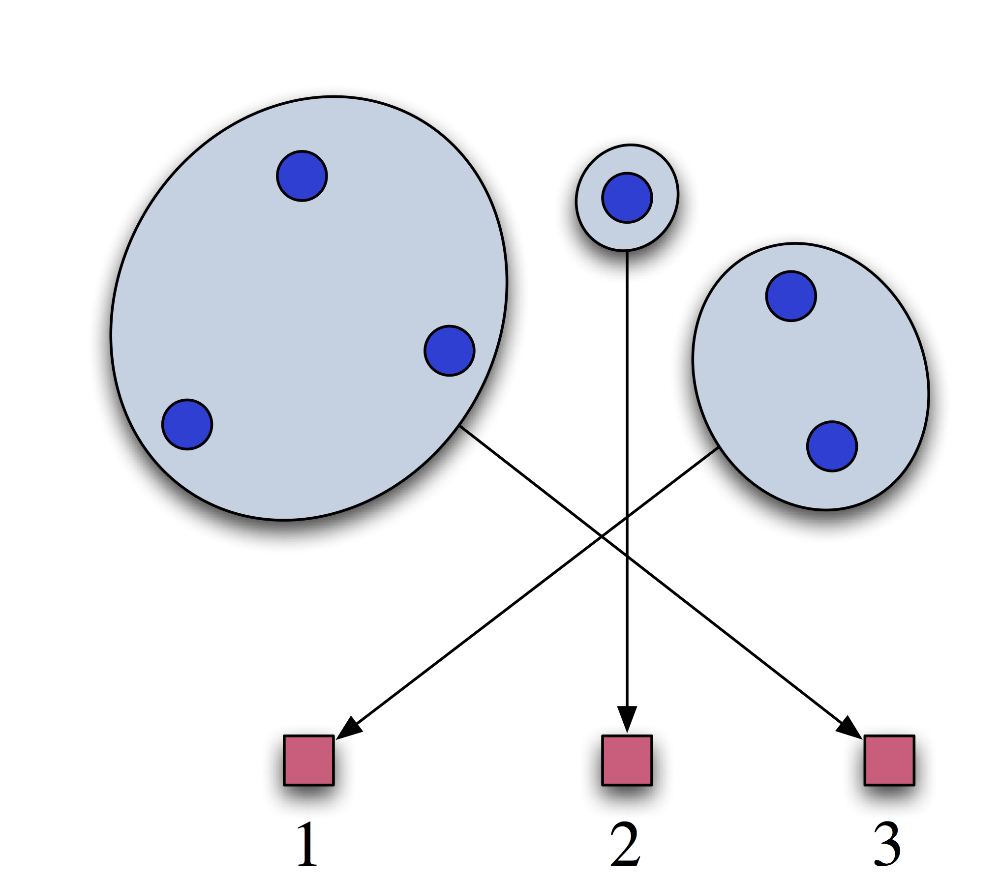

class: center, middle, inverse ## Price Discovery in Subgradient Combinatorial Auctions ### Jacob Abernethy$^1$, Sebastien Lahaie$^2$, Matus Telgarsky$^1$ #### EC 2016 - - July 28, 2016 <br> <br> ($^1$University of Michigan, $^2$Microsoft Research NYC) $$ \newcommand{\kernel}{\kappa} \newcommand{\la}{\left\langle} \newcommand{\ra}{\right\rangle} \newcommand{\ds}{\displaystyle} \newcommand{\sst}{\scriptstyle} \newcommand{\norm}[1]{\left\\|#1\right\\|} \newcommand{\by}{\bar{y}} \newcommand{\bz}{\bar{z}} \newcommand{\bpi}{\bar{\pi}} \newcommand{\bepsilon}{\bar{\epsilon}} \newcommand{\bx}{\bar{x}} \newcommand{\zero}{\mathbf{0}} \newcommand{\one}{\mathbf{1}} \newcommand{\argmax}{\operatornamewithlimits{argmax}} \newcommand{\mI}{\mathcal{I}} \newcommand{\ibundle}{ {\it i}Bundle} \newcommand{\kauction}{ {\it k}{-auction}} \newcommand{\bs}{\backslash} \newcommand{\conv}{\mbox{conv}} \newcommand{\kernel}{\mbox{ker}} \newcommand{\ph}{\phantom{a}} \newcommand{\bR}{\mathbf{R}} \newcommand{\mD}{\mathcal{D}} \newcommand{\Prob}{\mbox{Prob}} \newcommand{\Exp}{\mathbb{E}} $$ --- class: top ## Iterative Combinatorial Auctions <div> .right-column[ <center>  </center> ] .left-column[ * Set of distinct, indivisible items held by single seller * Buyers w/ values for bundles (complements+substitutes) * Allocation+prices updated after bids, until convergence ] </div> -- <dir> </dir> .important-block[ ### Objectives: * Efficient allocation * Incentives * .alert[Price discovery] ] --- class: top ## Motivation for Price Discovery * Guide the choice of packages to bid on during the auction, under uncertain values. * Clearing prices are an open certificate of optimality. * Clock-proxy auction: purpose of clock phase is to reach prices that inform bidding in proxy phase .paper[Ausubel-Cramton-Milgrom '06]. .important-block[ In practice, price discovery properties (efficiency, rate of convergence) depend on the .alert[complexity] of the prices used (linear, bundle). .paper[Bichler et al. '10; Schneider et al. '10] ] --- class: top ## Contributions A formal study of the convergence rate of subgradient auctions in terms of the complexity of prices used. 1. Bounds on convergence rates of subgradient auctions. * Quality of solution after a given number of rounds. * Convergence to specific clearing prices. 1. General LP formulation of the allocation and pricing problem. * linear and bundle pricing * polynomial pricing 1. Analysis under two agent models. * Stochastic bidding: approximate best response * Adversarial bidding: motivates activity rules --- class: top ## Caveats * Prices may be non-monotone in the auctions analyzed. * Only have upper bounds on convergence rates, no lower bounds. --- class: top ## The Model * $m$ indivisible items, $n$ agents, single seller. * A bundle is a subset of the items; set of bundles $X$. * Single-minded agents, $v\_{i} : X \rightarrow \mathbf{R}\_{+}$, representation $(x^{\star}\_{i}, v^{\star}\_{i})$: <div> $$ v_i(x) = \begin{cases} v^*_i & \text{if } x \geq x^\star_i \\\\ 0 & \text{ otherwise } \end{cases} $$ </div> where $x^\star\_i$ is a bundle and $v^\star\_i$ is a value. * An allocation is denoted by $q \in \\{0,1\\}^n$, indicating the winners. * The allocation is feasible if $q_i = q_j = 1$ implies that bundles $x_i^\star$ and $x_j^\star$ are disjoint; feasible set $F \subseteq \\{0,1\\}^n$. --- class: top ## Bundle and Price Encoding * Define a bundle encoding via $\phi : X \rightarrow \mathbf{R}^d$, where $d \geq m$. * The encoding specifies $d$ .alert[features] of the bundle that are priced. * Prices $p : X \rightarrow \mathbf{R}$ are .alert[linear functions] over feature space: $$ \textstyle p(x) = p^\top \phi(x) = \sum_{k=1}^d p_k \phi_k(x). $$ -- ### Why? * This is a trick from the ML/Stats world (.paper[Lahaie 2011]) * How to deal with high-dimensional hypothesis class? Need to efficiently take dot products using a *kernel* $\kappa(\cdot,\cdot)$, <div> $$ \overbrace{\text{inner product }\;\; \phi(x)^\top \phi(z)}^{\text{ high dim. vectors }} = \overbrace{\kappa(x,z) \;\; \text{kernel eval.} }^{\text{ comp. efficient }} $$ </div> --- class: top ## Examples We have three items up for auction, $\\{a, b, c\\}$. How do I encode $q$ for the bundle $\\{a, b\\}$? -- <div> \begin{align} $$ {\color{aqua} \text{Linear Prices:} }\quad \quad & \begin{array}{ccc} & a & b & c \\ q = & [\; 1 & 1 & 0 \;] \end{array} \\ {\color{aqua} \text{Quadratic Prices:} }\quad \quad & \begin{array}{cccccc} & a & b & c & ab & ac & bc \\ q = & [\; 1 & 1 & 0 & 1 & 0 & 0 \;] \end{array} \\ {\color{aqua} \text{Bundle Prices:} }\quad \quad & \begin{array}{cccccc} & a & b & c & ab & ac & bc & abc \\ q = & [\; 1 & 1 & 0 & 1 & 0 & 0 & 0 \;] \end{array} \end{align} </div> --- class: top ## The Primal: Allocation Finding an efficient allocation can be formulated as a (large) linear program .paper[Bikhchandani-Ostroy,~2002]. We show that their formulations can be written as the following .alert[primal formulation] <div> \begin{eqnarray*} \max_{q \in [0,1]^n} & \ds \sum_{i=1}^n v_i q_i & \\ \mbox{s.t. } & \ds q \in \kernel(M^\top) + \conv(F) & \end{eqnarray*} </div> where the matrix $M$ is defined as <div> $$ M^\top = \left[ \begin{array}{ccc} \;\; & & \;\; \\ \phi(x_1) & \cdots & \phi(x_n) \\ \;\; & & \;\; \\ \end{array} \right] $$ </div> --- class: middle ### The Representation Matrix <div> $$ M^\top = \left[ \begin{array}{ccc} \;\; & & \;\; \\ \phi(x_1) & \cdots & \phi(x_n) \\ \;\; & & \;\; \\ \end{array} \right] $$ </div> .important-block[ * $M$ is called the .alert[representation matrix]. * The $\kernel(M^\top)$ term is the relaxation from using simpler prices. * Using more expressive prices shrinks the kernel of $M^\top$. ] --- class: top ## The Dual: Prices The .alert[dual objective] is given in terms of the prices $p$: <div> \begin{eqnarray} \min_{w \in \bR^d} & \sum_{i=1}^n u_i(p) + R(p) & \\ \text{ s.t.} & p = Mw & \end{eqnarray} </div> <div> \begin{eqnarray*} \text{where} \quad u_i(p) & = & \text{max utility for agent $i$ at prices $p$} \\ R(p) & = & \text{max revenue for seller at prices $p$} \end{eqnarray*} </div> --- class: top ## The Dual: Prices .alert[The dual objective] is given in terms of the prices $p$: <div> \begin{eqnarray} \min_{w \in \bR^d} & \sum_{i=1}^n u_i(p) + R(p) \; {\color{aqua} + \; \lambda \|w\|^2} & \\ \text{ s.t.} & p = Mw & \end{eqnarray} </div> <div> \begin{eqnarray*} \text{where} \quad u_i(p) & = & \text{max utility for agent $i$ at prices $p$} \\ R(p) & = & \text{max revenue for seller at prices $p$} \end{eqnarray*} </div> Our proposed dual pricing formulation includes a *regularization* to ensure: 1. Uniqueness of the optimal prices, and 1. A faster rate of convergence --- class: top ### The Subgradient Descent Auction * For $t = 1, 2, \ldots, T$ 1. Seller posts prices $p^t = M w^t$ 1. Bidders submit bids $b^t$ 1. Seller computes "optimal" provisional allocation $q^t$ w.r.t. $p^t$ 1. Seller computes gradient $\nabla^t = M^\top(q^t - b^t) + \lambda w^t$ 1. Seller updates $w^{t+1} = w^t - \eta^t \nabla^t$ -- **Key idea:** A .alert[subgradient] of the dual objective corresponds to excess supply. Subgradient descent yields an auction adjusting prices according to excess demand (.paper[Bikhchandani et al. '01]). -- **Our Goal**: For a prices $p^t$ at round $t$ of the auction, we want to characterize how close they are to the optimum in terms of 1. objective value 1. point-wise distance to optimal prices --- class: top ## Stochastic (Noisy) Agent Bidding Model * At each round $t$, bidder $i$'s value for the bundle $x_i^\star$ is drawn $v^\star_i \sim \mD_i$, with support $[0,1]$. * The bidder then bids according to single-minded value $(x^\star_i, v^\star_i)$. This amounts to a random utility model. For instance, we may have $v_i = \bar{v}_i + \epsilon$ where $\epsilon$ has a logistic distribution, leading to <div> $$ \Prob(\mbox{bid on $x_i^*$}) \propto \exp\{ \bar{v}_i - p(x^*_i) \}, $$ </div> the logit model. For Gaussian $\epsilon$, we have the probit model. --- class: top ## Stochastic Model Convergence How quickly do we obtain good prices? -- .theorem[**Theorem:** Let $f(p;x,v)$ be loss of prices $p$ w/ bidders $(x\_i,v\_i)\_{i=1}^n$, and <div> $$ f^\star := \inf_{p = Mw, w \in R^d} \Exp\left[ f(p;X,V) \right] $$ </div> Then with probability at least $1-\delta$ over a random draw of $(x^t,v^t)_{t=1}^T$, auction prices $p$ at round $T$ satisfy <div> $$ \Exp\left[ f(p;X,V) \right] - f^\star \leq O\left(\frac{ {\color{aqua} n^2 2^m} + (\sqrt{n} + \sqrt{m})^2 \ln\frac{T}{\delta}}{\sqrt{T}} \right) $$ </div> ] --- class:top ## Stochastic Model Convergence How quickly do we obtain good prices? .theorem[ **Theorem:** Let $f(p;x,v)$ be loss of prices $p$ w/ bidders $(x\_i,v\_i)\_{i=1}^n$, and <div> $$ f^\star := \inf\_{p = Mw, w \in R^d} \Exp\left[ f(p;X,V) \right] $$ </div> Then with probability at least $1-\delta$ over a random draw of $(x^t,v^t)\_{t=1}^T$, auction prices $p$ at round $T$ satisfy <div> $$ \Exp\left[ f(p;X,V) \right] - f^* \leq O\left(\frac{ {\color{aqua} n^2 m^r 2^r} + (1 + \sqrt{n})^2 m^r \ln\frac{T}{\delta}}{\sqrt{T}} \right) $$ </div> for .alert[polynomial] prices of deg. $r$ (linear prices for $r=1$). ] --- class: top ## Stochastic Parameter Convergence .theorem[**Theorem:** Suppose the setting of the previous theorem, but with $\lambda > 0$. With probability $1-\delta$ over the draw of $(x^t,v^t)\_{t = 1}^T$, <div> $$ \norm{p - p^*}_\infty \leq O \left( \norm{M} \sqrt{ \frac{ {\color{aqua} n^2 2^m} + (\sqrt{n} + \sqrt{m}) \ln\frac{T}{\delta}}{\lambda \sqrt{T}}} \right) $$ </div> for .alert[bundle] prices. ] -- .theorem[**Theorem**: Similarly for .alert[polynomial] prices ($r=1$), we have <div> $$ \norm{p - p^*}_\infty \leq O \left( \norm{M} \sqrt{ \frac{ {\color{aqua} n^2 m^r 2^r } + (1 + \sqrt{n})m^r \ln\frac{T}{\delta}}{\lambda\sqrt{T}}} \right) $$ </div> ] --- name:advagent class: top ## Alternative: Adversarial Bidding Agents Imagine a non-stochastic bidding model: * Bidder $i$ chooses $b_i$ .alert[adversarially] upon seeing $p^t$. Can we obtain the same convergence guarantees? -- .theorem[**Theorem** (sketch): Even under adversarial bidding we can show that the *objective value* converges under a price aggregation scheme, at rates similar to stochastic model. But prices will not nec. converge. ] -- * We still get prices given a particular *activity rule*! .theorem[**Theorem** (sketch): If bids satisfy the GARP activity rule, then prices converage at essentially the same rate as in the stochastic setting. (Even holds with weaker assumptions) ] --- class: top ## Conclusions * Analyzed the process of .alert[price discovery] in an iterative auction using online learning bounds. * Bounds on convergence rate under stochastic bidding (random utility), and adversarial bidding (need activity rules). * Bounds on convergence of point-wise bundle prices (under regularization). * Rates essentially depend on dimensionality of prices for linear, polynomial, and bundle prices. --- class: middle <center> <h1> $\sim \sim$ FIN $\sim \sim$ </h1> </center> .footnote[Slides produced with Remark.js, MathJax, and HTML]